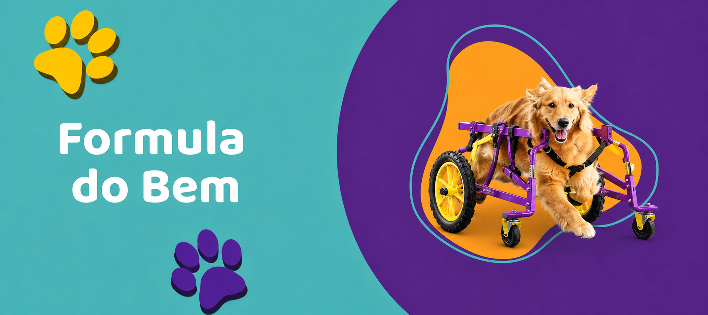

Conheça nosso programa Fórmula do Bem
O programa Fórmula do Bem tem como objetivo amparar tutores de baixa
renda que possuem um pet com algum tipo de deficiência, necessitando
de cuidados especiais.
Para isso, clínicas veterinárias parceiras indicam os cães e gatos com este perfil
e o Instituto passa então a colaborar com esses animais por meio de
doação de alimentos Fórmula Natural e auxílio com orientações sobre os
cuidados específicos para estes pets.
O Fórmula do Bem também promove ações de incentivo à adoção de cães
e gatos nesta condição.
Todas as ações do programa visam promover uma melhor qualidade de
vida a esses pets, bem como conscientizar sobre a causa.